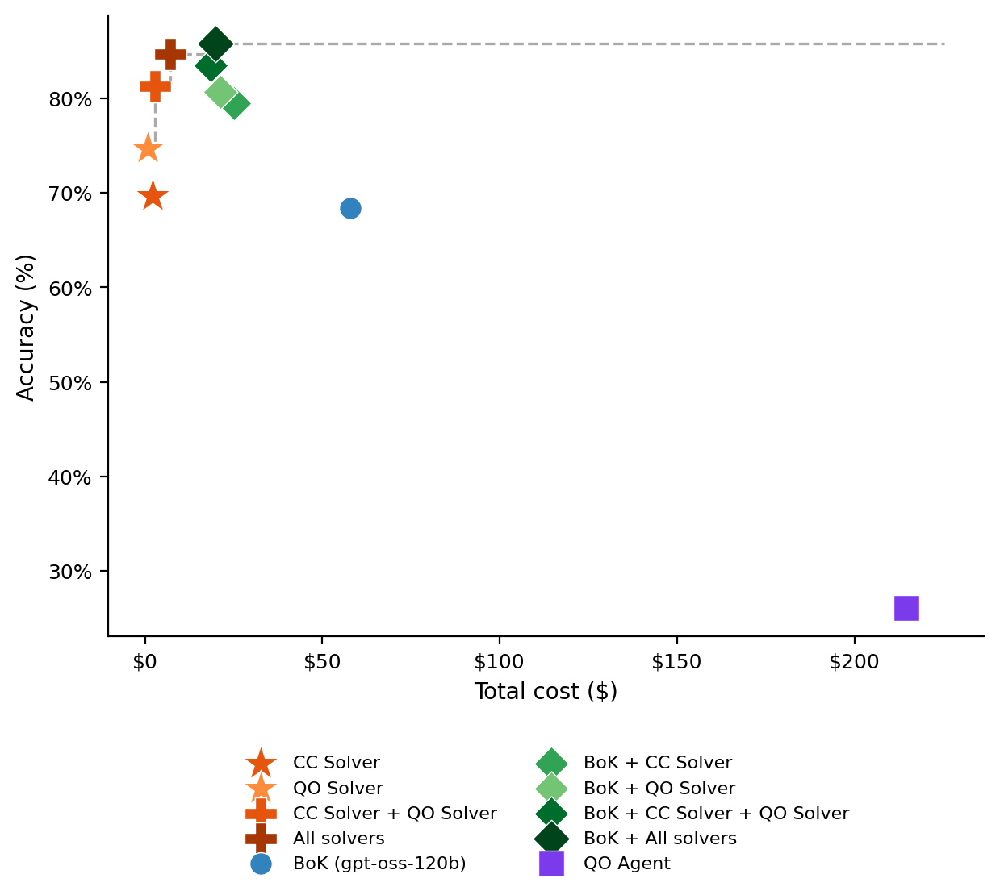
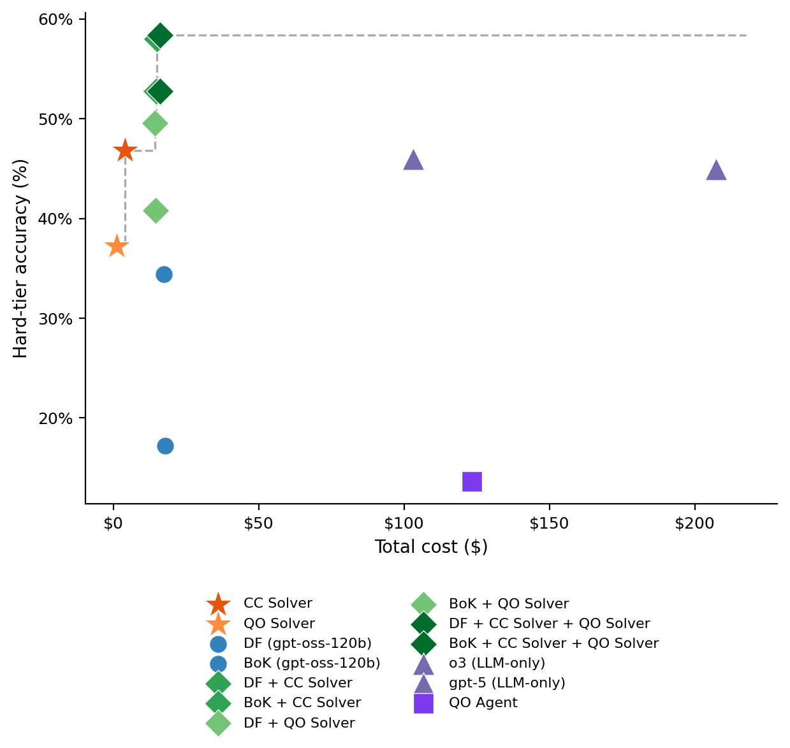
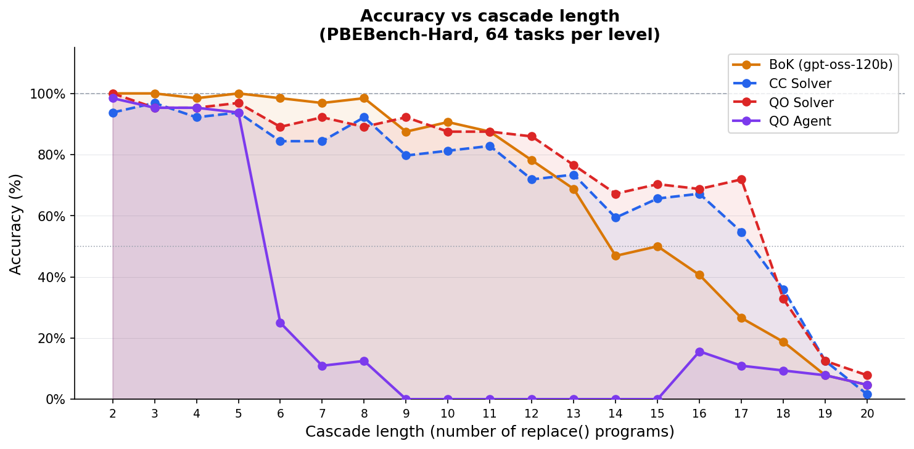
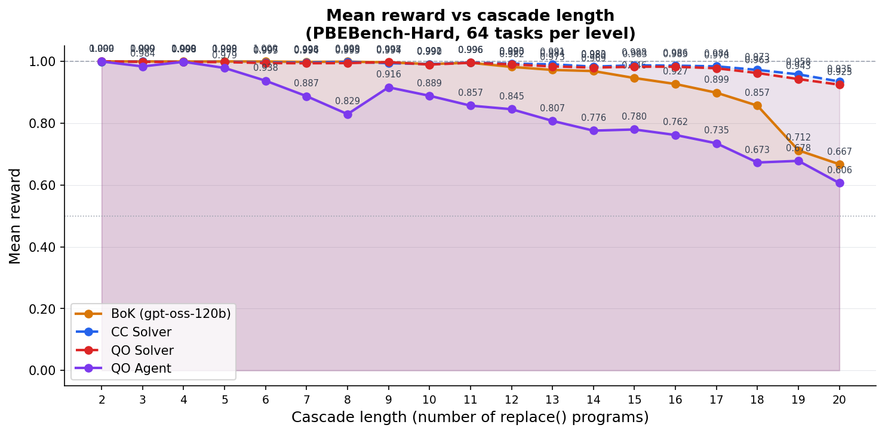

LLMs can solve program synthesis tasks but remain inefficient and unreliable on hard instances requiring large combinatorial search. Given a small set of reasoning traces, we use coding agents to compile them into reusable symbolic program synthesizers over constrained DSLs. The resulting solvers require no LLM calls at test time and are strong standalone systems: symbolic solver ensembles reach 91.3% accuracy on PBEBench-Lite and 84.7% on PBEBench-Hard, outperforming LLMs with test-time scaling for the latter by +16.3 percentage points at zero LLM inference cost.
They also complement LLM search, improving PBEBench-Hard accuracy from 68.4% to 85.8% while reducing reported token usage by 78%, and raising SLR-Bench hard-tier accuracy from 34.4% to 58.0% in a neuro-symbolic hybrid setting. Compared to directly using coding agents as per-instance solvers, induced solvers are substantially more Pareto-efficient, amortizing a small one-time construction cost over many zero-token executions.
Finally, most solvers transfer zero-shot to a real historical linguistics task — predicting sound changes in natural language data — reaching 80.1% accuracy under ensembling and recovering some plausible linguistic rules. Together, these results show that reasoning traces can be compiled into reusable symbolic solvers that solve many tasks directly, complement LLM inference on hard cases, and provide a scalable route to domain-general solver induction.
ReaComp operates in two stages: (1) offline solver induction from reasoning traces, and (2) efficient hybrid inference combining symbolic solvers with LLM fallback.
Sample ~100 LLM reasoning traces balanced across difficulty and outcome (success/failure), capturing both strategies and failure modes.
A coding agent ($\mathcal{A}_\psi$) reads the traces and iteratively constructs a Python solver SOLVER.py using the verifier as a guide.
At test time, the solver runs in pure Python with no LLM calls. Tasks solved correctly incur zero tokens — only failures fall back to LLM.
The hybrid strategy uses the solver when reward = 1.0 (zero tokens), otherwise falling back to BoK or DF — combining accuracy and efficiency.

Figure 1. Pareto frontier on PBEBench-Hard. Symbolic solvers and hybrids dominate the accuracy–cost tradeoff. Induced solvers exceed BoK at zero per-task cost.

Figure 2. Pareto frontier on SLR-Bench Hard tier. The CC Solver matches o3 and GPT-5 on Hard at zero inference cost; DF + CC hybrid sets the new state of the art.
| System | Acc% | Mean Reward | Complexity Δ | Tokens (M) | Cost ($) |
|---|---|---|---|---|---|
| LLM-only methods | |||||
| DF-32 (gpt-oss-120b) | 92.4 | 0.9796 | +2.11 | 111.1 | 16.74 |
| BoK (gpt-oss-120b) | 93.8 | 0.9808 | +2.19 | 68.0 | 12.20 |
| Symbolic solvers (one-time build cost only) | |||||
| CC Solver | 80.4 | 0.9438 | +3.00 | — | ~$2 § |
| Qwen Solver (best run) | 65.7 | 0.9022 | +3.01 | 4.82 § | $0.85 § |
| All Symbolic (union) | 91.3 | 0.9772 | +1.88 | — | $7.11 § |
| Hybrid: symbolic + LLM fallback | |||||
| BoK + Qwen Solver | 93.8 | 0.9808 | +2.94 | 50.7 | 9.97 |
| BoK + All Symbolic | 93.9 | 0.9810 | +2.19 | 43.5 | 14.94 |
| System | Acc% | Mean Reward | Complexity Δ | Tokens (M) | Cost ($) |
|---|---|---|---|---|---|
| LLM-only methods | |||||
| BoK (gpt-oss-120b) | 68.4 | 0.9428 | +5.14 | 332.1 | 57.83 |
| Symbolic solvers (one-time build cost only) | |||||
| CC Solver | 69.7 | 0.9873 | +8.06 | — | ~$2 § |
| Qwen Solver (run 2) | 74.7 | 0.9836 | +5.26 | 4.82 § | $0.85 § |
| All Symbolic (union) | 84.7 | 0.9920 | +4.56 | — | $7.11 § |
| Hybrid: symbolic + LLM fallback | |||||
| BoK + CC Solver | 79.4 | 0.9508 | +7.82 | 130.0 | 25.08 |
| BoK + All Symbolic | 85.8 | 0.9570 | +4.64 | 71.6 | 19.89 |
| System | Overall | Basic | Easy | Medium | Hard | Cost ($) |
|---|---|---|---|---|---|---|
| LLM-only methods | ||||||
| o3 † | 77.8% | 99 | 93 | 74 | 45 | 207.24 |
| BoK (gpt-oss-120b) | 68.7% | 100 | 100 | 57.6 | 17.2 | 17.88 |
| DF-32 (gpt-oss-120b) | 79.6% | 100 | 99.6 | 84.4 | 34.4 | 17.43 |
| Symbolic solvers | ||||||
| CC Solver | 68.4% | 100 | 78.4 | 48.4 | 46.8 | $4.01 § |
| Hybrid: symbolic + LLM fallback | ||||||
| DF + CC Solver | 86.6% | 100 | 99.6 | 88.8 | 58.0 | 14.91 |
† Reported scores from SLR-Bench leaderboard. § One-time build cost only (no per-task inference cost).
BoK collapses at long cascade lengths while symbolic solvers maintain structured search. At CL 14–17, symbolic solvers sustain 55–70% accuracy while BoK falls below 47%.

Figure 3. Accuracy by cascade length on PBEBench-Hard (64 tasks/level). BoK collapses beyond CL 13; symbolic solvers (CC, QO) maintain high accuracy across long-horizon tasks.

Figure 4. Mean reward by cascade length on PBEBench-Hard. Symbolic solvers achieve consistently higher mean reward than BoK at long cascade lengths, reflecting higher-quality partial solutions.
Symbolic solvers outperform LLMs on Hard tasks at zero per-task cost. The All Symbolic union reaches 84.7% on PBEBench-Hard, beating BoK (68.4%) by +16.3 pp — without a single LLM call. The CC Solver matches o3 and GPT-5 on the SLR-Bench Hard tier (46.8% vs 45%/46%).
Hybrid inference dramatically reduces token usage. BoK + All Symbolic cuts reported tokens by 78% on Hard (71.6M vs 332.1M) while reaching 85.8% accuracy — the best result on that benchmark. On Lite, 36% token reduction at no accuracy cost.
Reasoning traces (CoT) are critical for solver induction. Removing CoT drops Hard accuracy from 74.7% to 24.8% — a 50 pp collapse. The agent without traces falls back to textbook beam search, missing structural insights about DSL interactions.
Run-to-run variance dominates example-count effects. Three 100-example CoT runs span 51.8–74.7% on Hard — a 22.9 pp range. Solver induction is a search over algorithmic space, not a data-scaling problem. Ensembling diverse runs recovers most variance.
Zero-shot transfer to historical linguistics. Solvers induced on ASCII PBEBench data transfer to Unicode IPA data without any changes, reaching 80.1% accuracy on a real forward reconstruction dataset. The DSL naturally captures context-sensitive sound laws via character boundaries.
Solver construction is cheap relative to savings. A Qwen solver run costs $0.85 to build and recoups its cost in 9 tasks. At 1,000+ tasks, build cost is <1% of total inference savings. The CC solver ($2 build) saves ~$35 on Lite inference alone.